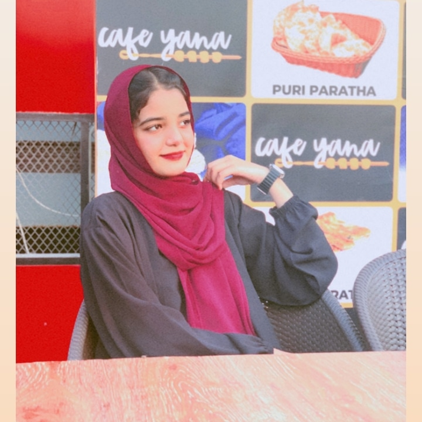

Front-end Developer | Karachi, Pakistan
"Aspiring web developer with a solid foundation in HTML, CSS, and JavaScript,
currently enhancing my skills in TypeScript and Next.js through online courses.
Eager to contribute to innovative web projects and grow in a collaborative environment."
phone: 0340-3538006
email:awhngsu2689@gmail.com
Green Flag School, Karachi Completed 10th Grade with Grade A. 2024
UI/UX Design : Basic principles of user interface and user experience design
Certifications & Quizzes Governor House Web Development Quiz: Passed Various Online Quizzes: Completed multiple quizzes to test and enhance web development skills
LinkedIn:
Connect With Me On LinkedIn
Github: Check Out My Github Repository
"Thank you for considering my application. I look forward to the opportunity to contribute to your team."